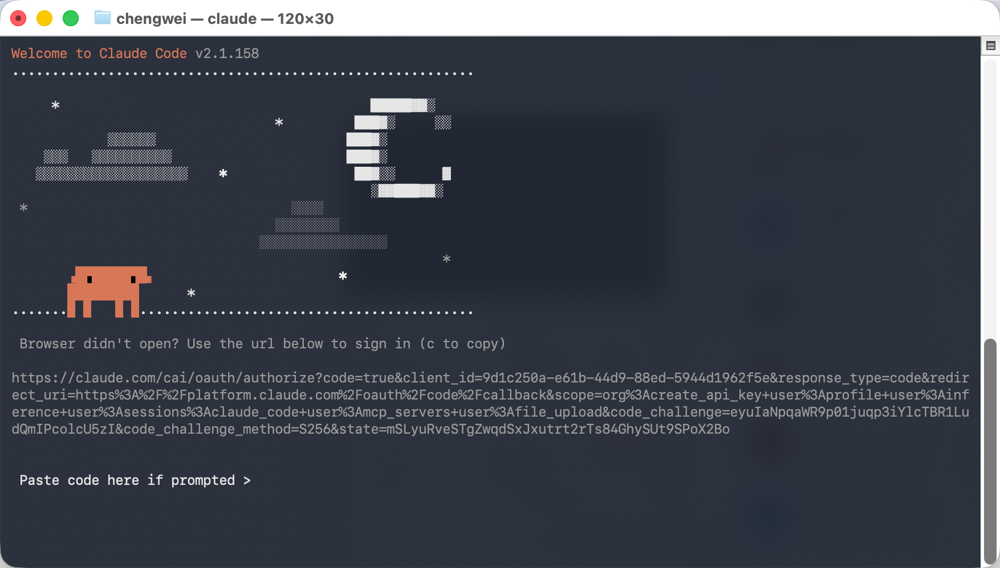

Codex · 邀请
先看官方邀请规则
在官方 Codex 页面里，可以从左下角个人菜单进入邀请入口并填写邮箱。
温馨提示：一天后查看重置次数，如未反馈增加次数请联系站长。
还没有收到邮箱提交。
🔑 在终端中登录
Claude Code / Codex 安装成功后，首次运行会引导你完成登录授权。
1
打开终端
🪟 Windows：按 Win + R，输入 powershell，按回车。
🍎 macOS：打开 Terminal（终端）。
2
运行 Claude Code / Codex
输入以下命令启动：
claude
首次运行会弹出登录提示；如果你先走 Codex 官方 Quickstart，也可以按官方页面的安装方式继续。
3
按提示完成浏览器授权
终端会显示登录链接，用浏览器打开并完成授权：
Claude Code v1.x.x
? 请在浏览器中完成登录 →
https://claude.ai/login?code=XXXXXX
等待授权完成...
✓ 登录成功！欢迎使用 Claude Code。
? 请在浏览器中完成登录 →
https://claude.ai/login?code=XXXXXX
等待授权完成...
✓ 登录成功！欢迎使用 Claude Code。

4
开始使用
登录成功后，在任意项目目录打开终端，输入 claude 即可开始使用。
🚦 配置 Codex 应用分流规则
导入分流规则后，Claude、ChatGPT、Codex 等 AI 工具强制走代理，国内网站正常直连。切换节点后不需要重新设置。
导入方式：按视频演示，在 v2rayN 路由设置里粘贴上方 JSON，保存后即生效。导入后 AI 工具流量自动走代理，国内网站自动直连。
💳 订阅 Claude Pro（国内用户）
如果你后续要长期使用，官方有对应的订阅方案可选：Claude Pro（$20/月） 或 Claude Max（$100/月）。
国内用户可通过 WildAI 平台完成充值订阅：